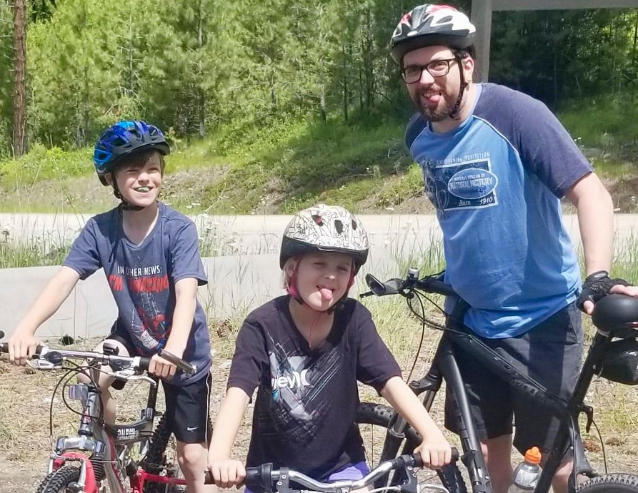

My life story (oh boy)
As I graduated high school, I chose audio engineering as the option to take on and went to the Centre for Arts and Technology at 17 years old. From there I became an audio visual technician which was my main career, eventually moving to Vancouver and running both audio and/or video for medium and large conferences, with the odd project management job.
In 2017, I decided that I should pursue an engineering degree to take advantage of the fact that I love projects, math and physics, and decided that electrical engineering was most inline with what I did hobby wise, and what my interests were. In 2019, after upgrading and getting my life set up for school again (it's a bit different when you're 30!), I was able to get into the ECET program at BCIT, and then later into electrical engineering program. I am now in second year at BCIT, and am looking forward to see where I can push myself to go and how I can apply my skillsets to society.
What interests me
Well, the thing I've enjoyed most since starting my program is programming microcontrollers, robotics, and FPGA. Even just the idea of taking an electrical component that can sense something in the outside world, and using that to power a circuit that can do something in real life is really cool to me! I've started some out-of-school projects with learning how to use IoTs (via Node-Red) and MQTT. I'll update on the project page when I start being able to pull off things worthy of making a video and writing about.On a more macroscopic level, to me engineering empowers people to be more efficient, more powerful, more safe, etc. You can use automation to save time on tasks and allow people to do more with their time and energy. One of the biggest inspirations for me to get into engineering was reading or hearing how peoples quality of life worldwide could be improved via projects or systems that created a higher level of efficiency or made rather unsafe tasks safe
 Other interests in life include biking (pictured left is my nephew, niece, and myself), playing piano, music (including going to festivals), space science, and video gaming, although I do a lot less of that than I used to!
Where I want to go
As I've already had a career so far in audio visual, I'm more cognizant than I would have been 10 years ago of the challenges faced when you graduate and are looking for a career to pan out. However, the perfect job for me is a mixture of fieldwork and project building. I think I have a good mix of understanding abstract concepts and connecting how they can be utilized in the real world.As time goes on, the direction that would make me happy would include working closely with transistors and circuits that contain them, and/or working with microcontrollers, especially if that eventually has me working on robotics. But we'll see!
One thing that should be noted is that environmental sciences and climate change are issues that I hold dearly, so if I ever get a career that is involved in those areas, that would fulfill me very much.
Thank you for your time in reading this, and I hope you enjoy rifling through my site!
- Jimmy